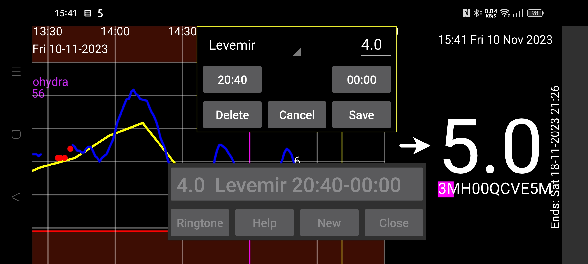

Reminders remind you if you haven't entered a certain amount within a certain time interval.
By pressing NEW you can add a new reminder.
Specify begin and end time of the time period, within which you should enter the specified amount under the specified label.
When the end time is reached, the program checks whether you have entered at least this amount, under the specified label, since the begin time. If you didn't register, a notification is shown and a ringtone played.
For example if you specify:
Levemir 6.0
21:30 - 23:55
You will be reminded after 23:55 if you didn't specify at least 6 units of Levemir after 21:30 the same day.
Already specified reminders are shown in a list. Touch to edit.
If everything goes well, reminders also work after reboot of Android without the user having to start Juggluco.
On some Huawei devices, you need to specify that you allow a program to be started at boot. This is done under Android Settings -> Battery -> App launch. Here you select Manually managed for Juggluco so that Auto-Launch and Run in Background are on. This is also necessary for loss of signal alarms to work after reboot without the user starting Juggluco.